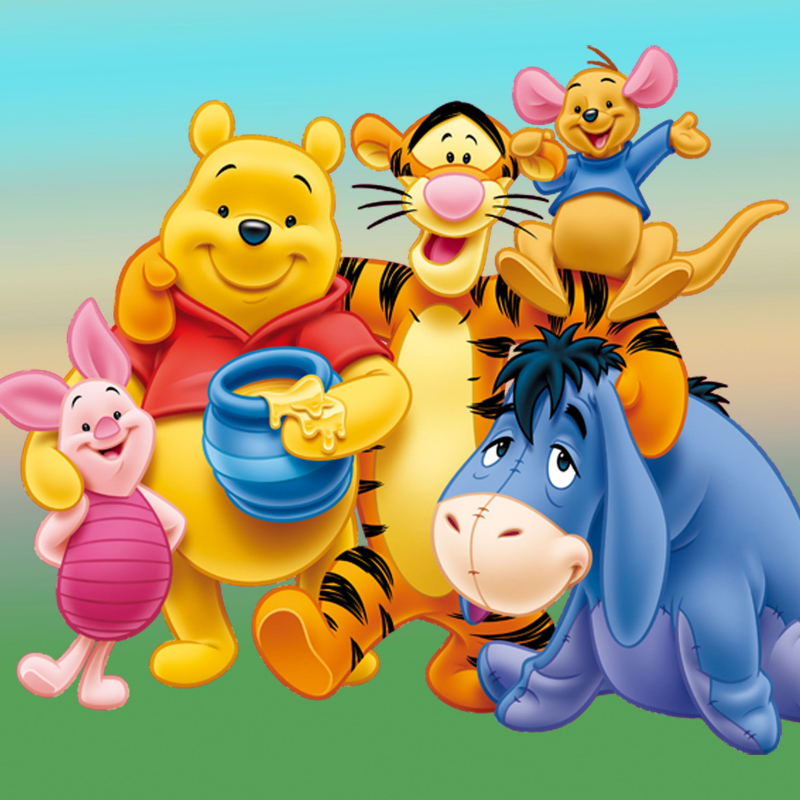
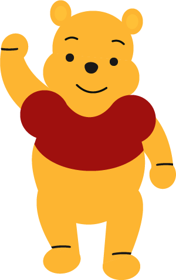
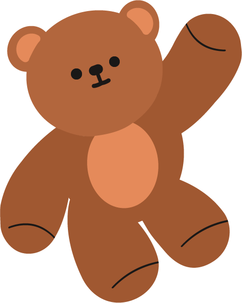

Winnie l'ourson
Créé en 1926 par A.A. Milne, Winnie l'ourson est un personnage emblématique de la littérature jeunesse. Inspiré par un ours en peluche appartenant au fils de l'auteur, Christopher Robin, Winnie incarne l'innocence, l'amitié et la simplicité.
Ses aventures avec Porcinet, Tigrou, Bourriquet et ses autres amis dans la Forêt des Rêves Bleus continuent de captiver petits et grands à travers le monde.


Le nom "Winnie" vient d'un ours noir canadien nommé Winnipeg.
Le livre original a été traduit en plus de 50 langues.
Winnie l'ourson a reçu son étoile sur le Walk of Fame d'Hollywood en 2006.
Les droits d'adaptation de Winnie appartiennent à Disney depuis 1961.
Le vrai Christopher Robin a donné son nom au fils de Winnie dans les histoires.
Winnie l'ourson est le personnage préféré de nombreux enfants dans le monde entier.
Galerie de la Forêt des Rêves Bleus
Winnie l'ourson
Winnie et ses amis

Ours Ursus

Logo Ursus